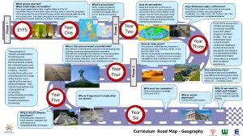
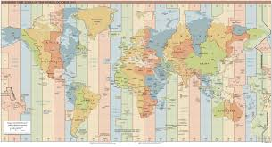

India, as the democratic nation we know it today, came into being on 15th August, 1947, upon gaining independence. It is a Republic, meaning that the supreme power resides in the hands of the countrymen. All the decisions are made by the representatives elected by the public under and within a set of fundamental, written rules called the "Constitution". The Constitution is the supreme law of the land. It was adopted by the Constituent Assembly on 26 November 1949 and came into force on 26 January 1950. The preamble of the Indian Constitution promises it to be a Sovereign, Socialist, Secular and Democratic Republic with a parliamentary system of government. Presently, India comprises 28 states and 8 Union Territories.
The States Reorganization Act, formulated in 1956 was a primary force in reorganising the boundaries of Indian states along linguistic lines. Later, as per an amendment in the Indian Constitution, three types of states, known as Part A states, Part B states, and Part C states, were amended to form a single type of state. Part A states refer to former governors' provinces of British India. Part B states refer to former princely states and Part C states included both the former chief commissioners' provinces and some princely states. Though additional changes have been introduced in the state boundaries since 1947, the Act is still considered an undisputed player in providing the present shape and contours to the Indian states. In November 2000, India gained three new states - Chattisgarh carved out of Madhya Pradesh, Uttaranchal from Uttar Pradesh, and Jharkhand from Bihar. In June 2014, Telangana was carved out of Andhra Pradesh, and granted individual state status.
Geography is the scientific study of the Earth's landscapes, environments, and the relationships between people and their surroundings. It examines both physical features like mountains, rivers, and climate patterns, as well as human aspects including population distribution, urbanization, and economic activities. Modern geography plays a crucial role in addressing global challenges such as climate change, resource management, and sustainable development by analyzing spatial relationships and environmental systems. The discipline utilizes advanced technologies like GIS (Geographic Information Systems) and satellite imagery to study Earth's complex systems and human-environment interactions. Environmental science focuses specifically on understanding natural systems and addressing pressing ecological issues. It investigates ecosystems, biodiversity, and the impacts of human activities on the planet's delicate balance. Current environmental challenges include climate change, deforestation, water scarcity, pollution, and loss of biodiversity. These interconnected problems require global cooperation and innovative solutions such as renewable energy adoption, conservation efforts, and sustainable practices. Both geography and environmental science emphasize the importance of protecting natural resources while meeting human needs, highlighting the delicate relationship between civilization and the natural world that sustains it. These fields provide critical knowledge for policymakers and communities working towards a more sustainable future.
Road Map For Geography and Enviorment


Environmental geography is the study of how humans and the environment interact, and how this impacts the environment and humans. It also examines how environmental factors affect policies, and how people think about the environment